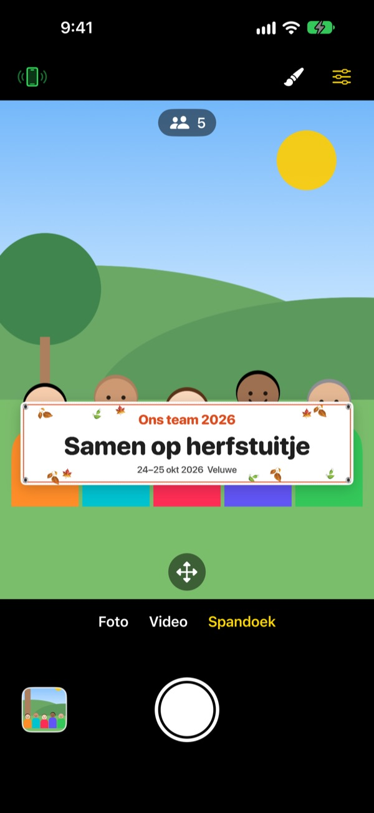
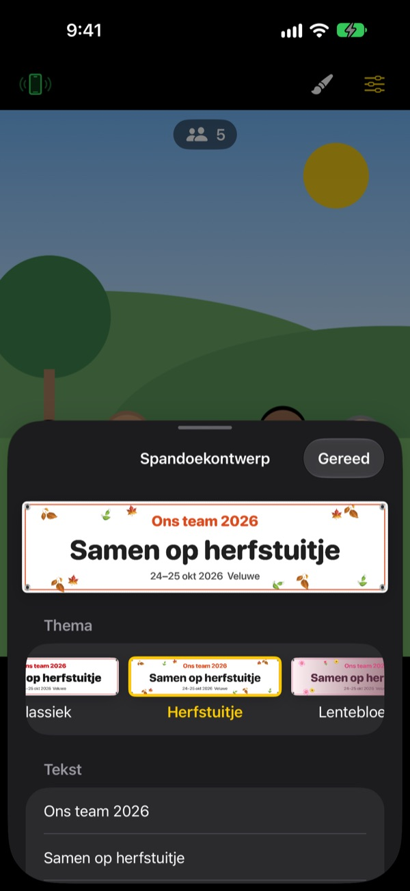

De groepsfoto met spandoek.
Zonder iets te laten drukken.
Typ je tekst, kies een thema en het spandoek staat recht voor de groep. De iPhone van een vriend wordt met één QR-scan een afstandsbediening, dus ook wie de foto maakt staat erop.
Alle functies zijn gratis. Vereist iOS 17 of nieuwer.

Maak een spandoek
Pas de tekst aan en tik op een thema. Druk op de sluiterknop en net als in de app telt hij drie seconden af.
Een spandoek laten maken voor één foto?
Je bestelt het, sjouwt het mee naar het uitje en daarna weet niemand waar het moet blijven. En omdat er niemand over is om de foto te maken, staat er altijd iemand niet op. ShutterLink zet het spandoek in het camerabeeld en maakt van de iPhone van een vriend een afstandsbediening, zodat iedereen met spandoek op de foto staat.
Het juiste spandoek in een minuut
Kies uit 13 thema's, zoals herfstuitje, lentebloesem, eindejaarsfeest, verjaardag, sportdag, diploma-uitreiking, bruiloft en bedrijfsworkshop, en schrijf tot drie regels eigen tekst.
Verander achtergrond, lettertype, versiering, kleuren en verhouding, en zet je logo erop. Kies stof, vinyl of papier: een stoffen spandoek hangt door, kreukt en wappert in de wind als een echte.

Afstandsbediening zonder installatie
Tik linksboven op de afstandsbedieningsknop en er verschijnt een QR-code. Je vriend scant hem met de Camera-app, en ShutterLink Remote opent meteen als App Clip en maakt verbinding.
In het livebeeld op de afstandsbediening zie je zelfs het spandoek: kader de foto en druk af. Elke foto komt direct binnen op de iPhone met de afstandsbediening, zodat een vriend zonder de app hem ter plekke kan bewaren en delen.
In drie stappen aan de slag
- 1
Zet de iPhone neer
Open ShutterLink en zet de iPhone op een statief of plank.
- 2
Plaats het spandoek
Kies onderaan Spandoek, stel met de penseelknop tekst en thema in en tik op de grond waar de groep gaat staan.
- 3
Steek je hand op
Steek je handpalm op of druk af op de afstandsbediening. De timer telt af en maakt de foto.
Gemaakt voor groepsfoto's
- Handpalmgebaar · klapontspanner
- Steek je open hand naar de camera op of klap één keer hard om de timer te starten
- Lachontspanner
- Maakt vanzelf een foto als iedereen lacht met de ogen open
- Timer 3 · 5 · 10 · 20 · 30 s
- Een stem telt af, de flitser knippert mee en de afstandsbediening trilt in je hand
- Vraag iedereen in de camera te kijken
- Tik erop en de camera-iPhone roept iedereen hardop om in de lens te kijken
- Serie van 3 · 5 foto's
- Kiest de beste foto waarop iedereen de ogen open heeft. In de galerie kun je een andere kiezen
- Personen · randen · waterpas
- Telt de mensen in beeld, waarschuwt als iemand aan de rand staat en toont een waterpas als de iPhone scheef staat
- Interval van 3 s tot 1 min
- Leg een zonsondergang of de voortgang van een klus vast met vaste tussenpozen
- Camerabediening
- Scherpstellen en belichten met een tik, belichtingscorrectie, flitser, raster, zoom van 0,5x tot 10x afhankelijk van het model, voor- en achtercamera, video
- Eenvoudige modus
- De afstandsbediening toont alleen één grote sluiterknop die iedereen kan indrukken
- Volumeknoppen · Camerabediening
- Druk direct af op de camera-iPhone, zonder afstandsbediening
In de spandoekmodus zijn flitser, serieopnames, zoom en de voorcamera niet beschikbaar. Timer, handpalmontspanner en afstandsbediening werken gewoon.
Alle functies zijn gratis
Gratis
- Spandoekmodus met 13 thema's
- Afstandsbediening zonder installatie (App Clip)
- Afdrukken met handpalm, klappen en lachen, plus timer
- Beste foto, personen tellen en waterpas
- Video en intervalopnames
Fooi geven (optioneel)
- Stuur een kleine, middelgrote of grote fooi via Instellingen
- Een fooi ontgrendelt of blokkeert niets
Geen abonnement. Je betaalt één keer, alleen als je een fooi geeft.
Geen advertenties en geen account.
Veelgestelde vragen
Wat heb ik nodig?
Installeer ShutterLink op de iPhone die de foto maakt (iOS 17 of nieuwer). Op de iPhone met de afstandsbediening hoeft niets geïnstalleerd te worden, die heeft alleen de eerste keer dat de App Clip opent internet nodig. Houd Bluetooth op beide aan en de toestellen dicht bij elkaar, meestal binnen 10 m.
Ik scan de QR-code, maar de App Clip opent niet.
Controleer of de iPhone met de afstandsbediening internet heeft. Je kunt ook de viercijferige code van de camera-iPhone invullen in ShutterLink Remote en op Verbind tikken. Kijk ook of App Clips niet geblokkeerd zijn in Instellingen › Schermtijd › Beperkingen voor content en privacy.
Hij blijft hangen op ‘Camera zoeken…’.
ShutterLink moet open op het scherm van de camera-iPhone staan. Controleer op beide iPhones of Bluetooth aanstaat in Instellingen › Bluetooth. De code verandert telkens als de app opent; heb je hem opnieuw geopend, gebruik dan de nieuwe QR-code of code en tik op Probeer opnieuw.
Ik zie ‘Bluetooth-toegang geweigerd’.
Zet ShutterLink aan in Instellingen › Privacy en beveiliging › Bluetooth. De afstandsbediening is een App Clip en staat er misschien niet tussen. Scan dan de QR-code opnieuw en tik op Sta toe als erom gevraagd wordt.
Het livebeeld hapert of is wazig.
Het livebeeld is met opzet verkleind zodat het via Bluetooth kan. Foto's en video's worden in de volle kwaliteit van de camera-iPhone bewaard. Muren, mensen of afstand kunnen haperingen geven, maar de sluiterknop en de andere bediening blijven werken.
Waar komen mijn foto's terecht?
In Foto's op de camera-iPhone en in de galerie van de app. De afstandsbediening krijgt ook een kopie, maar bewaart die niet vanzelf. Bewaar of deel hem dus voordat je de afstandsbediening sluit. Komt er niets in Foto's, sta ShutterLink dan toe in Instellingen › Privacy en beveiliging › Foto's.
Mijn video's hebben geen geluid.
Zet ShutterLink aan in Instellingen › Privacy en beveiliging › Microfoon.
Kan ik meerdere afstandsbedieningen verbinden?
Ja. Meerdere iPhones kunnen tegelijk verbinden met dezelfde QR-code of code, en elk ervan bedient dezelfde camera.
De verbinding valt weg tijdens het fotograferen.
Zolang ShutterLink open is, blijft het scherm aan. Vergrendel je de iPhone met de zijknop of wissel je van app, dan valt de verbinding weg. Houd de app dus in beeld tijdens het fotograferen.
Worden mijn foto's ergens geüpload?
Nee. De twee iPhones verbinden rechtstreeks via Bluetooth, en foto's en video's blijven alleen op de camera-iPhone en de verbonden afstandsbediening. Het werkt ook in de bergen of op het strand zonder bereik, en je hebt geen account nodig.
Nog niet opgelost of een fout gevonden? Mail naar leeo@kakao.com. Vermeld het model en de iOS-versie van beide iPhones, dan kunnen we sneller kijken.